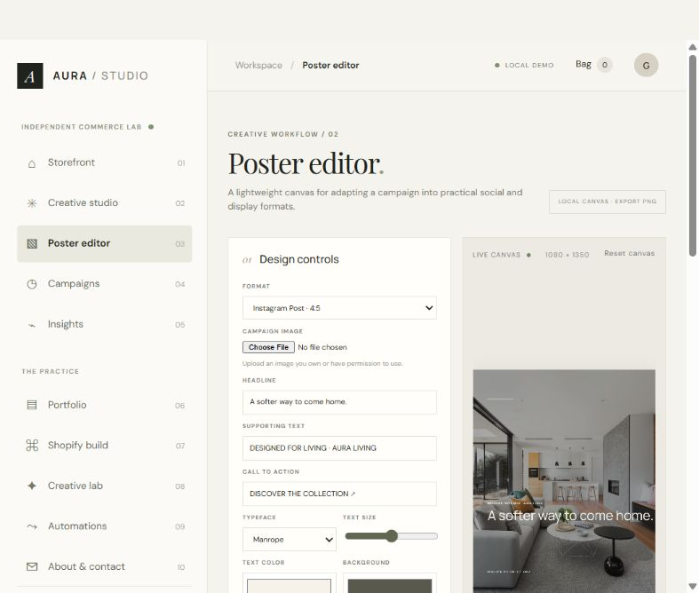

PROJECT 01 / BUILT INDEPENDENTLYCOMMERCE · CAMPAIGNS · CREATIVE TOOLS
COMMERCE PROTOTYPE · CREATIVE TOOLKIT
AI Commerce & Creative Studio
An independent project combining a fictional AURA LIVING storefront with campaign planning, AI-assisted copy, an editable poster canvas, and a creative portfolio.
Demo project: checkout is simulated and no payment is taken.
View AI Commerce Creative Studio on GitHub
